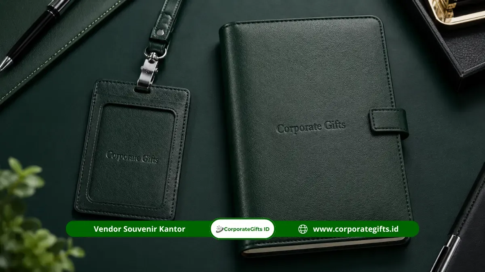

Corporate Gifts ID - Souvenir acara kantor premium adalah cinderamata korporasi berkualitas tinggi yang dipilih untuk menyemarakkan acara resmi institusi, seperti corporate gathering, rapat kerja nasional (rakernas), seminar tahunan, perayaan hari jadi perusahaan, hingga malam penghargaan loyalitas karyawan dan direksi. Souvenir jenis ini dirancang dengan standar material unggulan, personalisasi logo yang halus, dan kemasan rigid box yang elegan.
Melalui dukungan katalog terpadu di Corporate Gifts ID, artikel ini merangkum 17+ pilihan cinderamata acara kantor 2026, mulai dari alat tulis mewah berukir grafir, gadget cerdas, hingga set hampers eksekutif yang siap diselaraskan dengan identitas visual dan brand guideline perusahaan Anda.
Poin Kunci Souvenir Acara Kantor 2026:
- Representasi Reputasi: Kualitas merchandise mencerminkan standar profesionalitas dan budaya penghargaan perusahaan kepada peserta.
- Segmentasi Tepat Sasaran: Pembagian kategori yang jelas antara kebutuhan cinderamata massal karyawan dan paket eksklusif untuk jajaran direksi/tamu VVIP.
- Standar Material Terbaik: Penggunaan material kulit sintetis PU premium, stainless steel food-grade SUS 304, dan kayu alami tersertifikasi.
- Penerapan Subtle Branding: Penempatan logo dengan teknik laser grafir atau blind deboss yang minimalis, anggun, dan bernilai estetika tinggi.
- Waktu Pemesanan Aman: Disarankan melakukan finalisasi desain 3 hingga 4 minggu sebelum agenda acara digelar.
Mengapa Souvenir Acara Kantor Perlu Standar Premium?
Souvenir yang dibagikan pada kegiatan seremonial kantor bukan sekadar pelengkap formalitas, melainkan duta fisik bagi citra perusahaan di hadapan karyawan, mitra strategis, dewan komisaris, dan pemangku kepentingan lainnya.
Memberikan souvenir murah yang rentan rusak atau cepat usang berisiko menurunkan persepsi profesionalisme brand Anda. Sebaliknya, cinderamata bertaraf premium yang memiliki fungsi nyata di meja kerja akan menciptakan kesan mendalam (lasting impression) serta memperkokoh loyalitas kemitraan dalam jangka panjang.
Anda dapat meninjau aneka pilihan cinderamata kantor berkualitas tinggi langsung di katalog lengkap Corporate Gifts ID.
Tujuan Strategis Pemberian Souvenir Acara Kantor
Menentukan tujuan utama pengadaan merupakan langkah paling krusial sebelum memilih produk, karena setiap target acara membutuhkan sentuhan pendekatan yang berbeda:
1. Apresiasi Kinerja dan Pencapaian Karyawan
Untuk momentum penghargaan (employee recognition), pilihlah barang bernilai prestisius yang terasa personal, seperti jam tangan custom, pena premium bergravir nama, plakat akrilik 3D, atau paket gift set notebook eksklusif.
2. Penguatan Branding dan Relasi Publik (PR)
Untuk perhelatan yang melibatkan mitra bisnis, klien B2B, atau media massa, gunakan produk dengan tingkat mobilitas tinggi, seperti powerbank custom logo, leather notebook A5, atau paket hampers korporat eksklusif.
3. Perayaan Hari Jadi dan Milestone Perusahaan
Untuk merayakan ulang tahun kantor atau peresmian proyek baru, seleksi produk yang selaras dengan panduan souvenir per milestone karyawan guna mempertegas rasa kepemilikan dan kebanggaan terhadap institusi.
Kriteria Material dan Desain Souvenir Kantor yang Ideal
Souvenir acara kantor level eksekutif wajib memenuhi 3 pilar standar mutu utama:
- Kualitas Material Grade A: Memprioritaskan material bermutu seperti kulit sintetis PU tebal, bodi stainless steel SUS 304 tahan karat, atau paduan kayu alami berfinishing halus.
- Personalisasi Eksklusif: Penerapan teknik cetak presisi tinggi (laser engraving, blind deboss, UV print doff) yang menyematkan nama penerima, logo institusi, atau nomor identitas keanggotaan.
- Kemasan Rigid Hardbox: Boks kemasan kokoh dengan tatakan busa EVA die-cut yang dipotong presisi sesuai bentuk barang, menciptakan momen unboxing yang memukau.

Kombinasi buku agenda kulit PU custom deboss dan card holder lanyard untuk perlengkapan event kantor profesional.
Tabel Komparasi 17+ Kategori Souvenir Acara Kantor
Berikut rangkuman karakteristik material, teknik personalisasi, dan peruntukan acara untuk memudahkan penyusunan Rencana Anggaran Biaya (RAB) pengadaan kantor Anda:
| Kelompok Produk | Rekomendasi Item Utama | Teknik Personalisasi | Peruntukan Acara Terbaik |
|---|---|---|---|
| Stationery & Writing Set | Pulpen Metal Rollerball, Buku Agenda Kulit A5, Desk Organizer | Laser Engraving, Blind Deboss, Hot Stamping Gold | Rapat Kerja Nasional, Seminar Eksekutif, MoU Signing |
| Smart Gadget & Tech | Powerbank Fast Charging 10.000 mAh, Wireless Pad, TWS Earbuds | Digital UV Spot Print, Laser Logo Grafir | Kickoff Meeting IT, Gathering Mitra Bisnis, Hadiah Doorprize |
| Drinkware & Lifestyle | Tumbler Smart LED Vakum SUS 304, Desk Mug Keramik, Payung Golf | Rotary Laser Engraving, Sablon Decal Oven | Family Gathering, Program Kesehatan Kantor, Onboarding |
| Executive Leather Set | Tas Laptop Kulit PU, Dompet Kartu Nama, ID Card Lanyard Set | Deboss Foil Emas/Perak, Logam Etsa | Souvenir Jajaran Direksi, Kado Purnatugas, Klien Prioritas |
| Commemorative & Award | Plakat Akrilik/Kristal Optik, Kalender Meja Kayu, Aromaterapi Set | Grafir Kristal 3D, Cetak Flatbed HD | Awarding Karyawan Berprestasi, Anniversary Perusahaan |
17+ Pilihan Souvenir Acara Kantor Premium 2026
Berikut daftar kurasi 17+ cinderamata kantor bertaraf premium yang paling diminati oleh instansi BUMN, korporasi swasta, dan kementerian di Indonesia:
- Jam Tangan Eksklusif: Jam tangan analog bertali kulit dengan grafir laser logo korporat pada bagian belakang dial bodi.
- Pena Metal Premium Rollerball: Pulpen logam berbobot solid dengan ukiran nama penerima untuk momentum tanda tangan nota dinas.
- Leather Notebook Cover PU: Buku agenda bersampul kulit termoplastik dengan teknik emboss logo timbul yang tahan lama.
- Powerbank Fast Charging Slim: Baterai cadangan polimer 10.000 mAh dengan proteksi arus ganda dan finishing bodi doff.
- Executive Hampers Box: Paket bingkisan kustom dalam kemasan hardbox magnetik berpita satin untuk tamu VIP.
- Tumbler Stainless Steel Termal SUS 304: Botol minum insulasi ganda tahan suhu panas dingin hingga 18 jam dengan grafir keliling.
- Tas Laptop Kulit PU Premium: Briefcase elegan dengan kompartemen busa anti-benturan untuk mendukung mobilitas profesional.
- Payung Golf Otomatis Rangka Fiberglass: Payung berkanopi ganda anti-angin dengan sablon logo presisi tahan luntur.
- Plakat Kristal Optik 3D: Trofi penghargaan kinerja tahunan berukir grafir laser internal berdimensi tinggi.
- Mug Keramik Porselen Custom: Cangkir minum bervolume 11 oz dengan tatakan kayu cork base yang modern.
- Year-End Executive Gift Box: Paket perayaan penutup tahun berisikan agenda kerja baru dan aneka perlengkapan esensial.
- Kalender Meja Duduk Spiral: Kalender custom tahunan berdesain identitas visual institusi dari agenda dan kalender 2026.
- Dompet Kartu Nama Kulit: Card holder berbahan kulit sintetis dengan pengunci magnet dan grafir inisial nama.
- Diffuser Aromaterapi Ultrasonik: Pengharum ruangan meja kerja eksekutif dengan lampu ambience dan botol essential oil.
- Executive Desk Organizer: Wadah penyimpanan alat tulis multifungsi berbahan kayu solid ramah lingkungan.
- Speaker Bluetooth Portabel Bodi Logam: Pengeras suara nirkabel bersuara jernih dengan logo cetak bercahaya LED.
- Kacamata Anti-Radiasi Blue Light: Aksesori pelindung mata untuk profesional dengan kotak kacamata berlogo custom.
- Paket Apresiasi Masa Kerja: Paket cinderamata khusus untuk momentum ulang tahun kerja karyawan dan purnatugas.
Tren Souvenir Kantor yang Relevan di Tahun 2026
Memasuki tahun 2026, arah kurasi cinderamata korporat bertumpu pada 3 tren utama:
- Sustainability & ESG Gifts: Penggunaan material berkelanjutan seperti bambu organik, jerami gandum daur ulang, dan stainless steel non-toksik yang merefleksikan kepedulian lingkungan instansi.
- Smart Corporate Devices: Integrasi fitur teknologi nirkabel, digital smart sensor suhu pada tumbler, dan kartu identitas berbasis NFC digital.
- Luxury Minimalist Stationery: Kembalinya minat pada stationery mewah klasik dengan sentuhan tipografi bersih dan kemasan hardcase berkelas.
Bagaimana Menjaga Konsistensi Branding pada Souvenir Acara Kantor?
Agar cinderamata kantor merefleksikan standar korporasi secara sempurna, terapkan pedoman branding berikut:
- Penerapan Subtle Branding: Posisikan logo dengan proporsi yang pas dan elegan, hindari ukuran logo yang terlalu mendominasi produk.
- Kesesuaian Palet Warna Korporat: Pastikan kode warna material dan cetakan konsisten dengan standar panduan identitas brand perusahaan.
- Sertakan Kartu Ucapan Personalisasi: Tambahkan kartu ucapan (thank you card) berbahan kertas linen tebal dengan tanda tangan direksi untuk memperkuat ikatan emosional.
Menyusun Kalender Corporate Gifting agar Berkelanjutan
Pengadaan souvenir yang efektif harus direncanakan secara terjadwal melalui kalender pengadaan tahunan:
- Kuartal 1 (Q1): Penyusunan welcome kit karyawan baru dan cinderamata rapat kerja kickoff.
- Kuartal 2 (Q2): Pengadaan paket hampers hari raya Idul Fitri dan cinderamata mid-year review.
- Kuartal 3 (Q3): Persiapan souvenir gathering tahunan dan agenda CSR perusahaan.
- Kuartal 4 (Q4): Produksi massal kalender meja, agenda tahun baru, dan year-end gift box.
Untuk kebutuhan level pimpinan tertinggi, Anda juga dapat membaca panduan souvenir direksi acara perusahaan serta strategi kurasi merchandise eksklusif direksi.
Kesimpulan
Keberhasilan pengadaan souvenir acara kantor premium bertumpu pada 4 pilar fundamental: kejelasan tujuan acara, pemilihan material unggulan, personalisasi nama yang halus, dan konsistensi branding yang terencana matang.
Wujudkan pengadaan cinderamata kantor terbaik instansi Anda bersama CorporateGifts.ID. Jelajahi katalog resmi kami untuk menemukan kombinasi produk paling ideal bagi kesuksesan event perusahaan Anda.